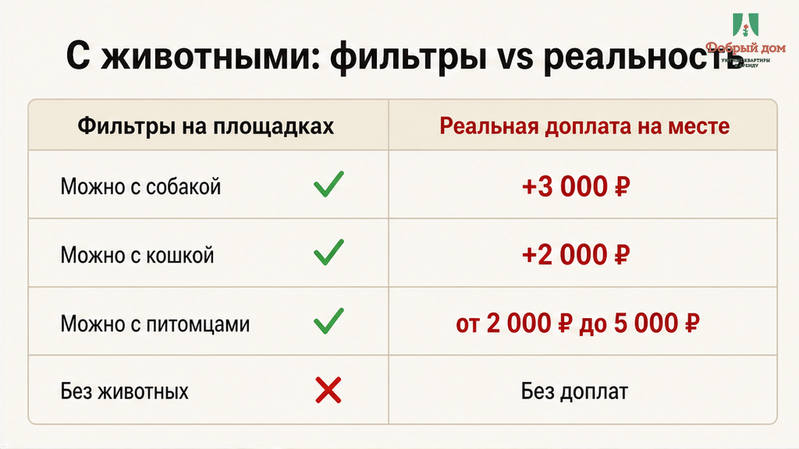
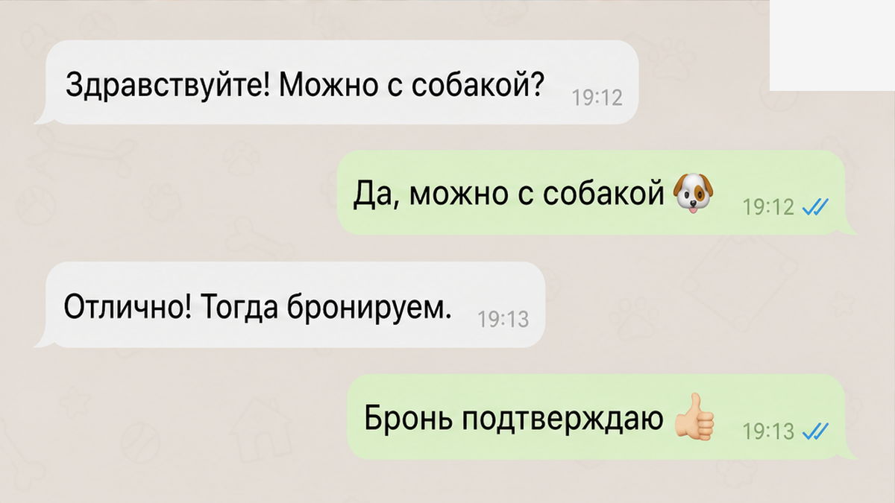
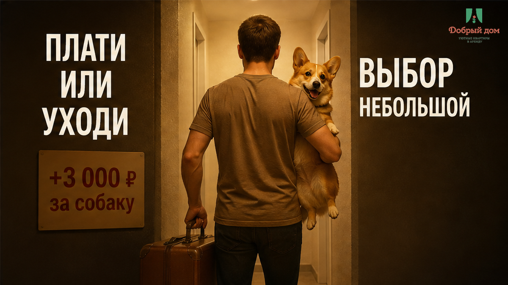
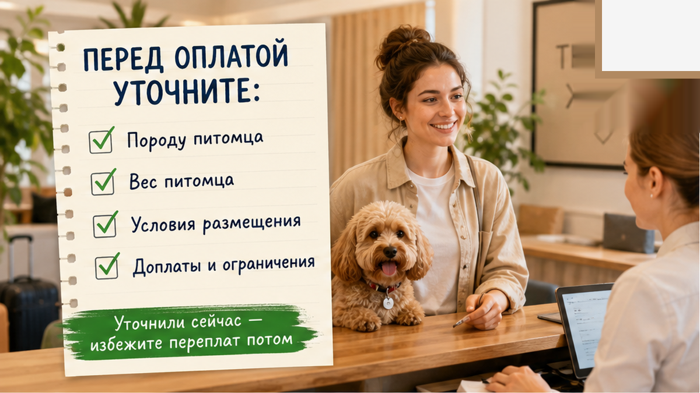
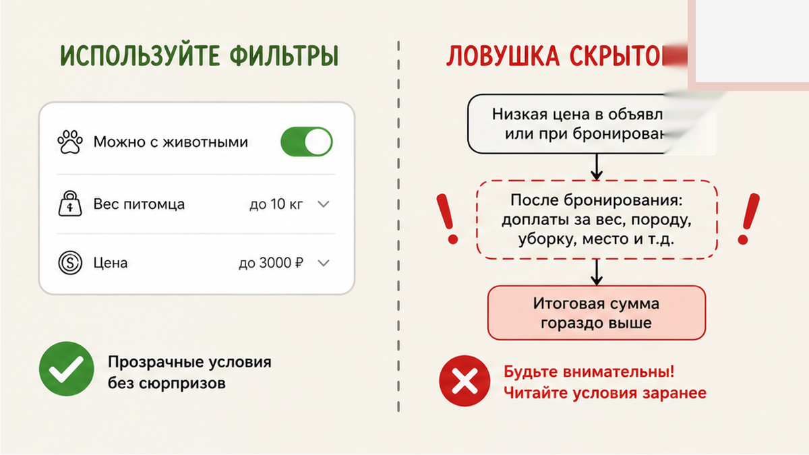
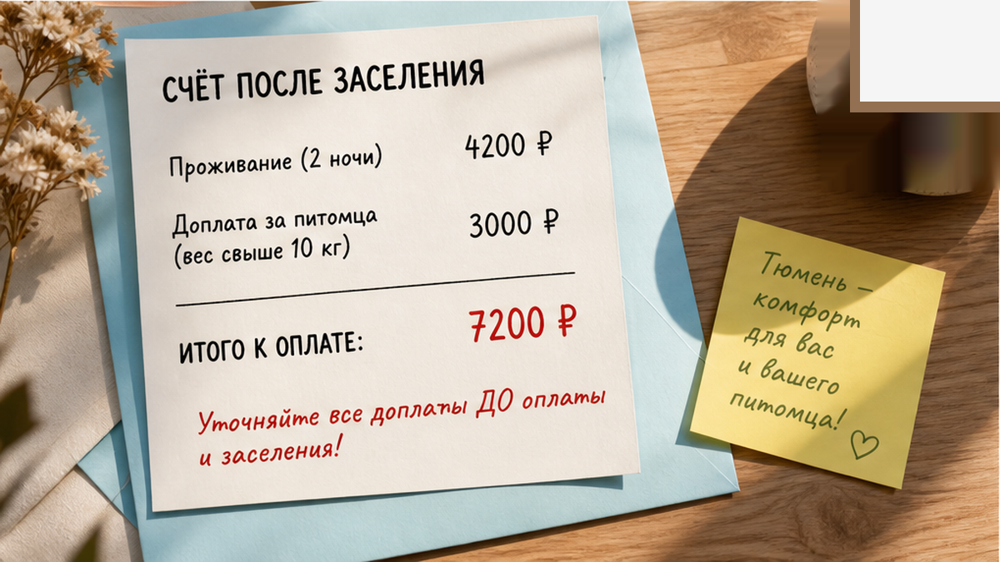

Сергей ехал из Кургана с корги: двенадцать килограммов, короткие лапы, переноска на заднем сиденье. В объявлении стоял фильтр «можно с животными», а в переписке хозяин ответил прямо: «да, с лапой можно». Сергей внёс предоплату 4 200 ₽ за две ночи, получил код от ключницы, поднялся, поставил чемодан и отстегнул поводок. И только после этого пришло сообщение: «доплата за уборку с питомцем 3 000 ₽, переведите сейчас». Три тысячи — почти столько же, сколько стоила вся бронь. За то, что уже было согласовано одним словом «можно».
Вот в этой точке обычный вежливый разговор превращается в счётчик. Собака уже в квартире, сумка распакована, машина отогнана, до дома двести с лишним километров. Отказаться — собрать всё обратно и искать ночлег с собакой в чужом городе. Заплатить — признать, что цена в объявлении была не ценой, а приманкой. Так не работает. Обещание было простое: «с лапой можно». Если у этого «можно» есть ценник, его называют до перевода — а не после того, как гость снял обувь.
Я хост посуточной в Тюмени. Это «Добрый дом». Пишу этот разбор не про «плохого хозяина», а про механику: почему доплату за питомца иногда называют после двери и как гостю закрыть эту дыру одной фразой в переписке. Мы на связи в Telegram и MAX — там же отвечаем на такие вопросы до брони, а не после заселения.

Галочка в фильтре площадки — это маркетинг. Она поднимает объявление в выдаче для тех, кто ищет жильё с собакой, и сама по себе ничего больше не объясняет. В ней нет суммы, условий, ограничений по весу или породе. Гость видит «можно» и достраивает остальное сам: раз можно — значит, включено в цену. Хозяин видит ту же галочку и достраивает своё: можно, но за отдельные деньги, которые я назову, когда пойму, что за зверь приехал.
Между этими двумя пониманиями — три тысячи рублей и один заезд, из которого уже трудно выйти. Именно поэтому доплату называют не в переписке, а после кода от ключницы. Пока гость выбирает, он сравнивает варианты и может уйти к другому объявлению. После заселения сравнивать уже нечего: он внутри, устал, с собакой на руках. Цена его «нет» выросла с нуля до целого вечера в чужом городе.
Это тот же приём, что и с лишним человеком в компании: сначала бронь на двоих, потом у двери — доплата за третьего у двери. И тот же приём, что с залогом, который спокойно принимают переводом, а на выезде объявляют залог на выезде — «не вернём». Меняется повод, но не момент. Деньги просят там, где отказ обходится гостю дороже всего.

Сергей потом перечитал чат. Там всего четыре реплики, и они объясняют всю историю.
Он: «Здравствуйте, еду с собакой, корги, некрупная. Можно?»
Хозяин: «да, с лапой можно».
Он: «Итого 4 200 за две ночи, верно?»
Хозяин: «верно, предоплата на карту».
Ни слова про уборку. Ни слова про «плюс три». Ни одного вопроса про собаку: ни о породе, ни о весе, ни о том, линяет ли она, ни о том, останется ли одна в квартире. Хозяин не спросил не потому, что ему всё равно. Он не спросил потому, что конкретный вопрос разрушил бы удобный момент: назовёшь сумму заранее — гость уйдёт сравнивать; назовёшь после кода от ключницы — ему будет сложнее отказаться.
И вот здесь проходит граница между сервисом и ловушкой. Не размер доплаты решает. Три тысячи за уборку после собаки — обсуждаемая сумма, если в квартире светлый текстиль, а хозяин действительно закладывает дополнительную уборку или химчистку. Но эту сумму нужно назвать до брони. Не собака решает. Корги на двенадцать килограммов — не проблема для нормальной квартиры. Решает момент, в который гостю сообщили цифру.

Честный вопрос, и одного правильного ответа здесь нет. Кто-то переводит три тысячи, чтобы не портить себе поездку. Кто-то принципиально собирает чемодан и уезжает искать другое жильё — с собакой, вечером, в незнакомом районе. Кто-то начинает торговаться и слышит: «тогда освобождайте квартиру».
Как поступили бы вы — заплатили бы на месте или ушли? Напишите нам в Telegram или MAX, мы такие ситуации разбираем предметно: что реально можно вернуть через площадку, а что уже нет.

Когда в заявке появляется слово «с собакой», у нас включается один вопрос. Не «а она у вас воспитанная». Не «а она не лает». А конкретный: «Какая порода и сколько весит?»

Этот вопрос — отмычка. За тридцать секунд он закрывает почти всё, из-за чего потом спорят у двери. Двенадцать килограммов и короткая шерсть — одна история. Сорок килограммов и сильная линька — другая. Хорёк, кот в переноске, щенок, который ещё не приучен оставаться один, — третья. Из ответа сразу понятно: пускаем или нет, нужна ли доплата за уборку и какая именно.
Дальше мы говорим цифру в чат. Одну. До предоплаты. Она фиксируется вместе с суммой брони: «две ночи — столько-то, питомец — столько-то, итого — столько-то». Если гостя это не устраивает, он спокойно уходит к другому варианту, и это нормально. Лучше потерять бронь, чем поставить человека с собакой перед выбором без выбора.
А если условия не сходятся, мы говорим это словами, а не счётом после заселения. Не «потом разберёмся». Не «на месте договоримся». Нет. Так не заселяем. Даже если гость уже в дороге. Даже если он готов доплатить сверху, лишь бы не искать заново. Потому что заселение, которое начинается с внезапного перевода, дальше нормально не идёт: человек всю ночь ждёт следующего сюрприза.
Код от ключницы у нас приходит после того, как в чате зафиксирована итоговая сумма — целиком, вместе с питомцем. Бесконтактное заселение — это удобство для гостя, а не рычаг для хоста. Дверь не должна быть местом, где меняется цена.

Сначала проверка. Потом перевод. Не наоборот.
Проверка здесь — не просто «прочитал отзывы». Проверка — это письменный ответ хоста на прямой вопрос о деньгах. Пока итоговая сумма не написана в чате словами и цифрами, вы не знаете настоящую цену проживания. Вы отправляете аванс за право узнать её уже внутри квартиры.
Отдельно — если едете надолго, семьёй или с ребёнком-студентом: длинные заезды тем более требуют зафиксированной суммы заранее, тут «рядом с вузом» — 40 минут пешком.
Наш вывод простой. «Можно с лапой» — это не скидка и не одолжение. Это условие, у которого есть цена, и цену называют до того, как гость отстегнул поводок. Хост, который держит цифру в кармане до заселения, продаёт вам не квартиру, а безвыходность. Разница между нами и таким объявлением помещается в один вопрос, заданный вовремя: какая порода и сколько весит.
«Добрый дом», Тюмень. Пишите: Telegram · MAX · менеджер @Dobriy_dom_Tyumen. Бронь — добрыйдом-72.рф/booking, сайт — добрыйдом-72.рф, телефон +7 993 574-83-22. Сумму с питомцем назовём в чате до предоплаты.